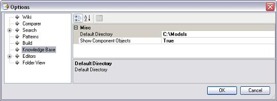
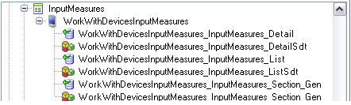

The Knowledge Base node has two properties.  Default Directory. Sets the directory under which your Knowledge bases are saved by default. You can type the folder name directly in the "DefaultDirectory" property, or navigate with the browse button until you find the desired location. By default, the value for this property is "\Models". Show Component Objects. This property allows displaying all the children of a parent object for troubleshooting purposes, specifically the internally generated objects by the Workwith Devices instances. You should NOT modify that objects. See an example in the image below. 
|
| Backlinks |
| Category:IDE Configuration Options |